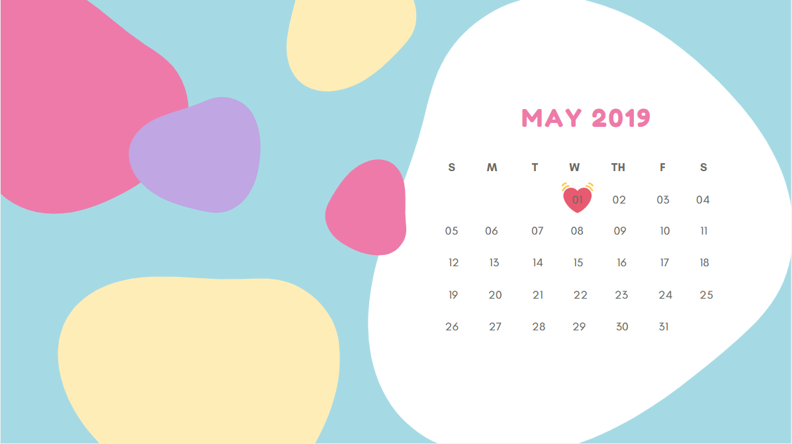
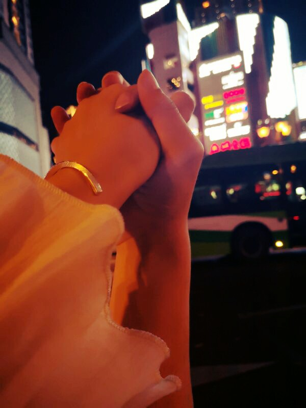

小铭❤小蓝一生一世
按键盘 "↓" 开始倾听我的表白
有一段时间的小铭一直是一个人生活，享受着孤独，也憧憬着爱情。

一个人的长廊

一个人的山岗

一个人的地铁

一个人的游乐场

但他依然乐观，微笑着，等待着

生活难免有风风雨雨

他总是能够轻松的应对

并且面带阳光、自信的笑容

生活也不会总是一帆风顺

但他每次都能勇敢的面对
随时准备接受生活的挑战


可是小铭的爱情又在哪里呢？
在镜子里面吗？他不敢相信

他去问大树，我的爱情在哪里？
大树告诉他，也许就在不远的地方

于是，小铭一个人继续向前走
走在茫茫的雪地上

直到有一天小铭与小蓝相遇了

今天是小铭回家第一次见小蓝的时间，那个时候紧张又害羞，内心忐忑不安
小铭回到工作的地方啦，今天这个时间是很有意义的哟，因为这是他们在一起的那一天，小铭很开心，就是不知道小蓝会不会很开心
小蓝妈妈要照片，哇，小铭拍了好多次啊，总是拍不好≧ ﹏ ≦
今天小蓝要去小铭工作的地方去看他哎，小铭好高兴，把屋子都打扫的干干净净，什么都弄的新的🏡
小蓝都过来看了，小铭当然也是要回去看小蓝的啦，马不停蹄的就赶回去了。🏃
今天是元旦了，可是小铭因为其他原因没有回去，但是今天他们增添了一双情侣鞋哎。👟👞
闻到过年的气息了哎，今天晚上小蓝的奶奶又要照片了，哎呀，发哪张？要不要重新照一张？不行，要找最好看的😊
2月14
今天是情人节，可是他们并不能在一起过，因为今天他们都要上班了，(；′⌒`),不过礼物肯定不会少啦。😘

因为情人节没有一起过，所以小铭就回来看小蓝啦，不过今天没告诉小蓝，给了她一个惊喜，(●'◡'●)😁
今天小蓝又过来看小铭啦，不过这次过来，小蓝回去就感冒了，小铭好难过,他多想奔回去照顾小蓝😭
今天清明，😂，但是小铭回去看小蓝了，因为清明要放假呀。
这是小铭和小蓝第一次去外面的城市玩儿，很开心，很幸福，他们一路逛吃逛吃，哈哈。下次他们还要出去玩儿
 小铭一直想象着和小蓝在一起的情景，两个人待在一起
一起开心的生活着

因为这样小铭就可以展现自己的技能啦

煮饭

每天早上，他们都吃着自己做的美食

然后再一起高高兴兴的出门上班
小铭会觉得自己好幸福。
因为有小蓝
那个有小蓝在的地方
就是幸福的港湾

他们偶尔也会吵架

小铭不想这样


一定是我有什么做的不对，小铭在想
如果没有小蓝在身边，窗外就没有风景

如果没有小蓝在身后


小铭又怎会飞的更高更远
小铭不想这样。
小铭许下了愿望


嘿嘿，不告诉你
爱情就像花草一样
需要用包容来浇灌

11月7号，小蓝的生日
小铭开始为小蓝准备礼物


看着礼物一件件准备好了 小铭好开心 因为他想象着小蓝收到礼物时 开心的样子

想想后面还有一辈子 小铭好开心 因为可以和小蓝 去全世界好多地方玩
小铭也会继续努力
为了他和小蓝的梦之城堡

小铭很幸福，因为他找到了小蓝。他相信后面的每天都会是快乐的
简简单单，体会着与小蓝在一起的每一个刻

后来的一天，小蓝说她想放弃了，小铭很难过，他不想放弃，他一直在劝着小蓝，希望小蓝能坚持下去。


小蓝：永远有多远？
小铭：比时间多一秒就是永远，我会永远爱你
小蓝：世界有多大？
小铭：你走到哪里，世界就有多大
愿得一人心，白首不相离


520快乐
I love you

小铭和小蓝的故事会一直继续下去。
无论精彩、平淡都会是他们喜欢的。
-- 按“Esc"键有惊喜